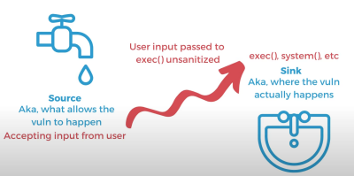

How to Conduct

- See what the app's uses are. For example Uber handles a lot of users sending sensitive information such as their exact location, credit card information for the transaction of ordering an Uber, etc. So a priority to focus the code review on would be to find any data information leaks.
Conducting a manual secure code review for large applications requires a structured approach to ensure that all parts of the application are reviewed thoroughly. Here are some steps to follow when conducting a manual secure code review for large applications:
- Plan the review: Before starting the review, plan out how it will be conducted. Determine which parts of the application are most critical and prioritize those for review first.
- Divide and conquer: Break down the application into smaller, more manageable pieces that can be reviewed separately. This will make it easier to focus on specific areas of the codebase and avoid getting overwhelmed by the size of the application.
- Establish coding standards: Establish coding standards for developers to follow throughout the development process. This will help ensure that all code is written consistently and makes it easier to identify issues during reviews.
- Assign roles: Assign specific roles to team members based on their expertise in certain areas of the application or security best practices.
- Conduct peer reviews: Have multiple team members conduct peer reviews on different sections of code simultaneously to speed up the process.
- Use automated tools: Utilize automated tools such as static analysis tools or vulnerability scanners to help identify potential security vulnerabilities in large portions of code.
- Analyze input validation: Check how user input is validated in each section of code and ensure that it is properly sanitized to prevent attacks.
- Review access controls: Check if access controls are implemented correctly in each section of code and that users can only access data they are authorized to view.
- Check error handling: Ensure that error messages do not reveal sensitive information and that they are handled securely in each section of code.
- Verify encryption: Check if sensitive data is encrypted both in transit and at rest in each section of code.
- Review third-party libraries: Check if any third-party libraries used in each section of code have known vulnerabilities or weaknesses.
- Document findings: Document all findings from each section of code reviewed and provide recommendations for fixing any identified issues.
- Retest after fixes: After any identified issues have been fixed, retest the affected areas of the application to ensure that all vulnerabilities have been addressed.
- Continuously monitor: Continuously monitor the application for new vulnerabilities or issues as changes are made over time.
By breaking down a large application into smaller pieces, utilizing automated tools, establishing coding standards, assigning roles, conducting peer reviews, analyzing input validation, reviewing access controls, checking error handling, verifying encryption, reviewing third-party libraries, documenting findings, retesting after fixes, and continuously monitoring for new vulnerabilities or issues, a manual secure code review can be conducted effectively even for very large applications while ensuring comprehensive coverage across all sections of codes within an application's ecosystem